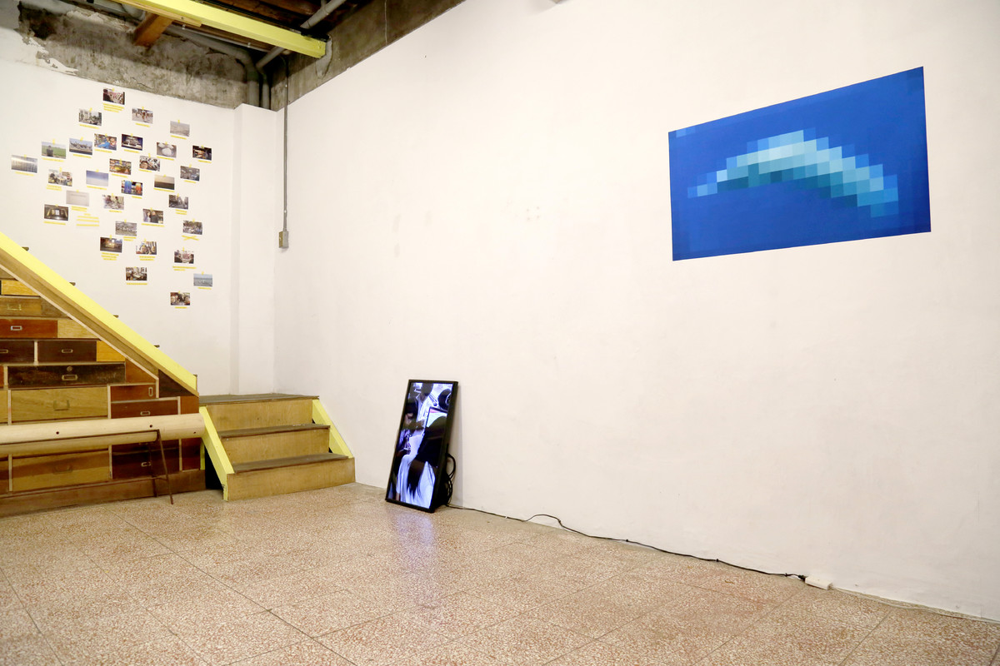

爱丽丝

摄影尺寸为100x56cm、17x12cmx30，录像为彩色单屏幕双声道可变尺寸，16分钟、17分钟，文献为可变尺寸，2019
Alice是一條鯨魚，生活在太平洋。據說它發射的音波頻率跟所有鯨魚都不同，所以它無法找到同類並交流。因此，Alice是全世界最孤單的鯨魚。
—百度百科
這次在臺北的項目《Alice》也是考量項目的在地性環境，邀請社區的街坊鄰居、叔叔阿姨、市民學生參與計畫，用藍色和綠色畫出一張關於鯨魚“Alice”的畫，用藝術的方式給這條生活在太平洋“孤單的朋友”一個問好！